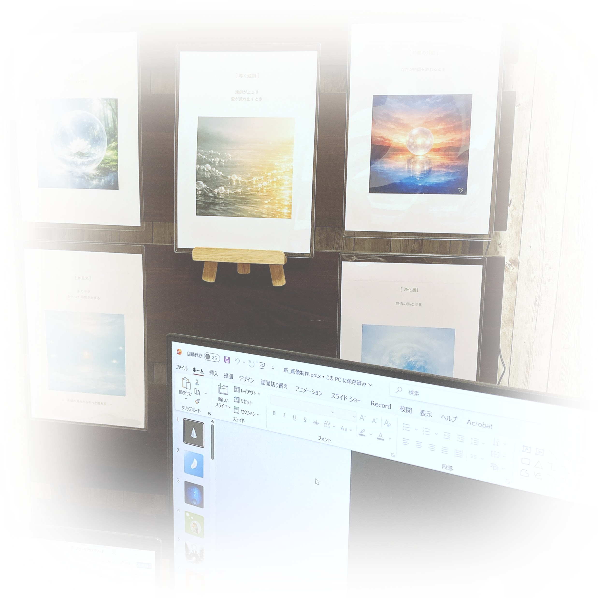

創造とは、何かを生み出すことではなく
もともと、そこにあった光を思い出すことなのかもしれない。
幼いころから、言葉にならない感覚や、場の気配に触れながら過ごしてきました。 人生の転機をきっかけに、内面世界の探求が深まり、瞑想や心理学を通して意識と創造について学び続けています。 内側に立ち上がる映像や感覚は、やがてアートという形になりました。 作品は何かを表現するためではなく、その瞬間に触れた静かな光を記憶として残すために生まれています。
アート作品制作：Microsoft Office 2024（PowerPoint / Word）
ホームページ制作：テキストエディタ（HTML / CSS コード）